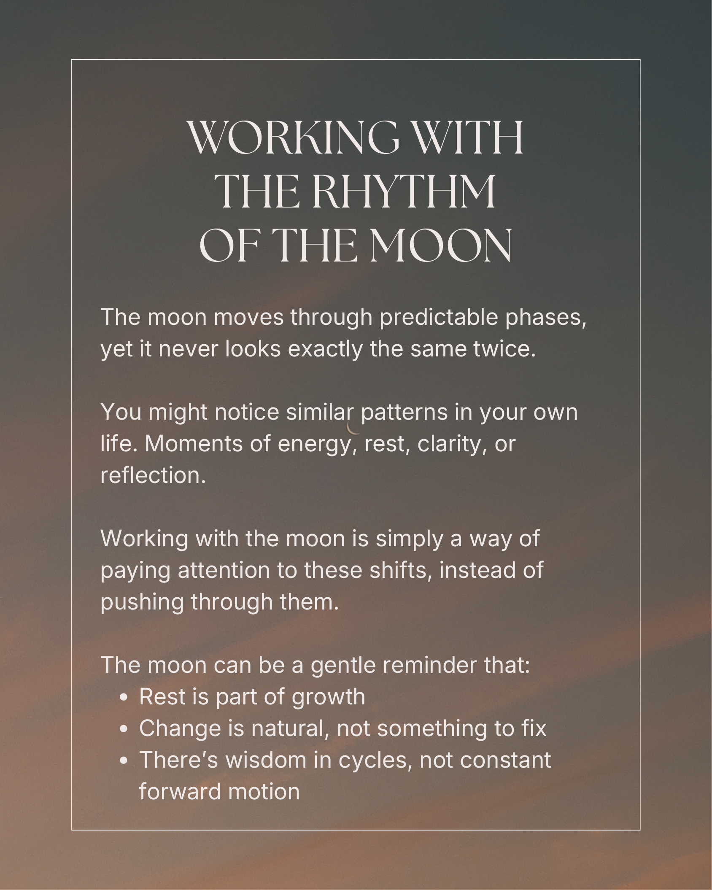

Working With
the Moon
Simple Ways to Work With the Moon Phases
A gentle introduction to the moon phases and the intentions often associated with each one.
Get the Free GuideInside the Guide
If you've been feeling drawn to the moon phases but aren't sure where to begin, this guide is for you.
Working with the moon doesn't have to feel complicated or overly spiritual. It can simply be a gentle way to slow down, reflect, and reconnect with the natural rhythms already present in your life.
This free guide introduces the phases of the moon, their common themes and meanings, and simple intentional ways to work with each phase throughout the lunar cycle.
No pressure. No perfect rituals. Just small moments of reflection, awareness, and intention.
-
A simple introduction to the phases of the moon
-
Common themes and intentions associated with each phase
-
Gentle reflections for slowing down and checking in with yourself
-
Simple ways to work with the rhythm of the lunar cycle
-
A grounded, approachable perspective on moon rituals and reflection
Inside Preview


Get Your Free Guide
Enter your details below, and we'll send it straight to your inbox.
Explore More Free Guides and Resources

5 Micro Rituals to Come Back to Yourself
Simple rituals for slowing down, reconnecting with yourself, and bringing more presence into everyday life.
Learn More
5 Simple Ways to Ground and Reset
Gentle practices for the moments you feel overstimulated, overwhelmed, or disconnected from yourself.
Learn More
Living More Intentionally
Simple shifts to help you slow down, reconnect, and move through everyday life with more intention.
Learn More
Crystal Cheat Sheet
A gentle introduction to crystals, including chakra associations, intentions, and simple ways to work with them in everyday life.
Learn More